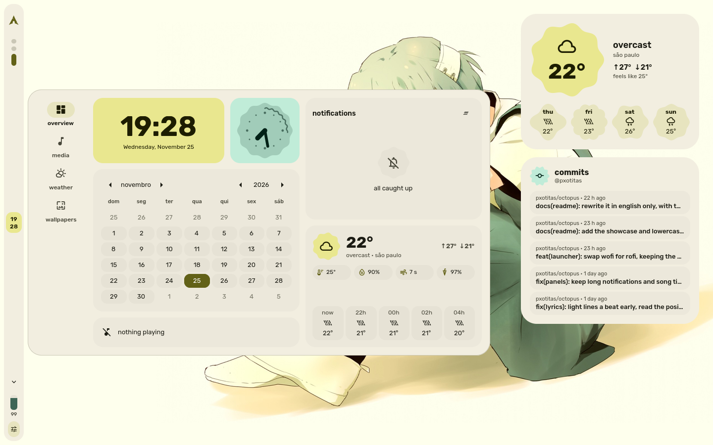
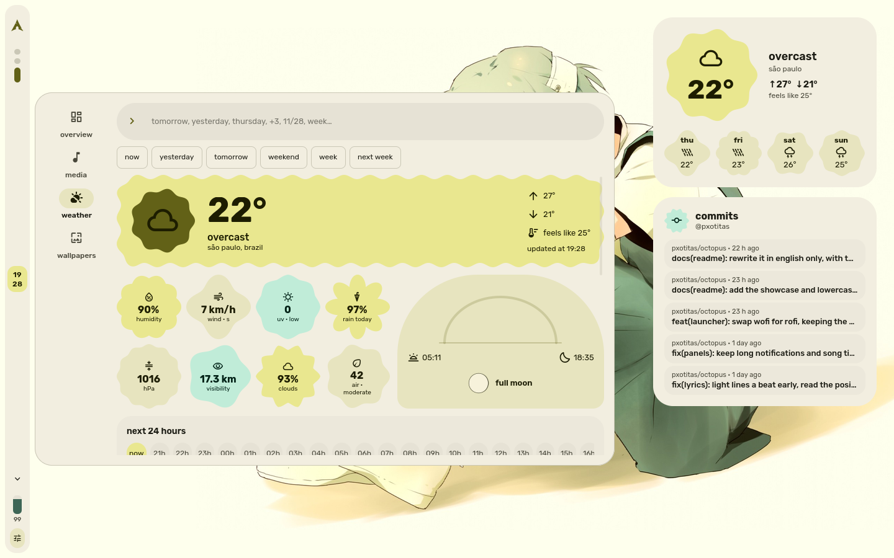
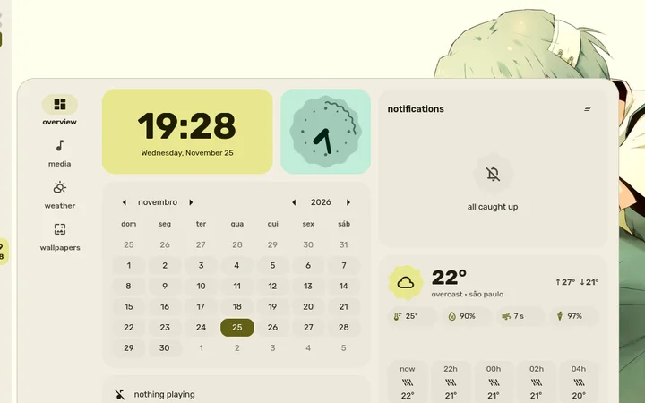
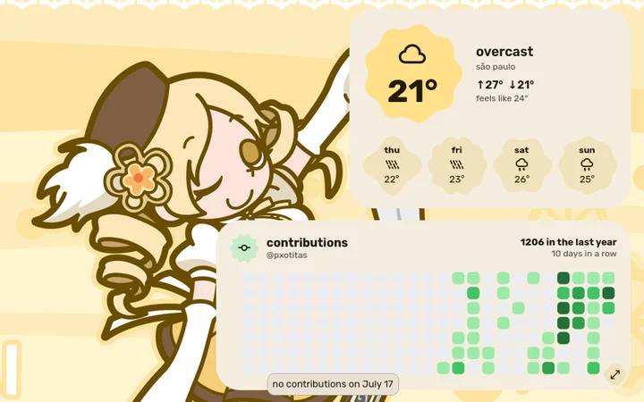
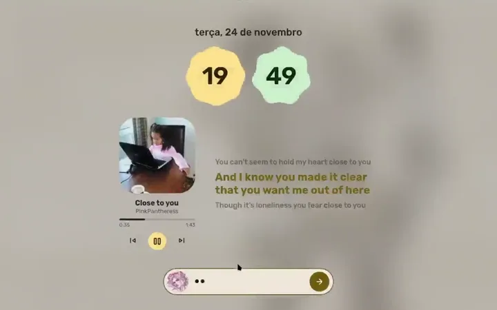

octopus
um shell m3 cozy pro niri. uma barra vertical minimalista na waybar, e tudo que é maior num companion em rust + gtk4.

pergunta pro clima
a aba de clima aceita perguntas depois de um >: amanhã,
ontem, próxima quinta, sexta passada, +3, 28/11, a semana ou o
fim de semana. de uma semana atrás até duas pra frente, pelo open-meteo. testa:

o que tem dentro
superfícies opacas e tonais em shapes m3. cores do wallpaper. leve o bastante pra ficar em uns 45 mb parado.

dashboarddash
rail de navegação, relógio analógico, calendário, a música com a letra, as notificações, o clima e um seletor de wallpaper.
 partly_cloudy_day
partly_cloudy_day
clima
métricas em shapes m3, o arco do sol e a lua, hora a hora, e qualquer dia de uma semana atrás até duas pra frente.

widgetswidgets de desktop
embaixo das janelas: o clima num cookie grande, e os seus últimos commits no github.
 tune
tune
central de controle
wi-fi, bluetooth, som, brilho, mídia e notificações, num lugar só.
 search
search
spotlight
apps e as ações deles, calculadora, arquivos com /, energia com >.

locktela de bloqueio
shapes m3 que giram e mudam a cada tecla, a letra sendo cantada, o clima.
ele veste o seu wallpaper
escolhe um wallpaper e o matugen repinta tudo: a barra, os painéis, o rofi, o fuzzel e o resto do sistema. claro, escuro, ou o que a imagem pedir.
como as cores funcionaminstalar
no arch (ou o que tiver esses pacotes), o repo mora no próprio ~/.config/octopus.
git clone https://github.com/pxotitas/octopus ~/.config/octopus
~/.config/octopus/install.shdepois, no fim do ~/.config/niri/config.kdl:
include "~/.config/octopus/niri.kdl"dependências
pam waybar matugen matuwall awww cliphist wl-clipboard wtype playerctl cava brightnessctl networkmanager bluez-utils libpulse python unicode-emoji unicode-cldr fd gcc rofi gtk3 gtk4 gtk4-layer-shell ttf-material-symbols-variable rust
depois: os atalhos e o que dá pra mudar.